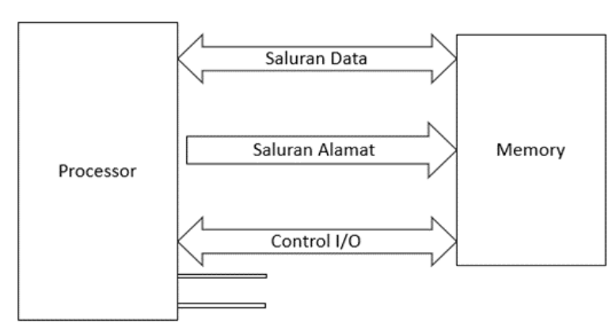
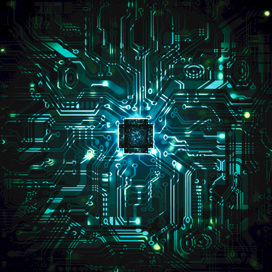
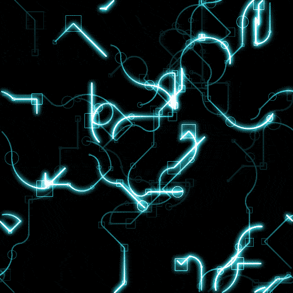
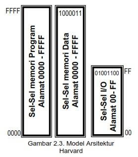

Mikroprosesor adalah sebuah chip yang dapat melaksanakan operasi
hitungan, operasi nalar dan operasi kendali secara digital,
mikroprosesor dikemas dengan plastik atau keramik yang dengan pin – pin
sebagai terminal input dan output dari chip. Mikroprosesor merupakan
rangkaian terpadu (Integrated circuit) dalam bentuk komponen chip VLSI
(Very Large Scale Integration) yang mampu menjalankan perintah secara
berurutan dalam bentuk program, sehingga dapat bekerja sesuai yang
diinginkan programmer. Perintah pada suatu mikroprosesor diberikan dalam
bentuk biner atau bahasa mesin.
SALURAN - SALURAN PADA MIKROPROSESOR
1) Bus saluran alamat (Addres Bus)
Saluran alamat (addres bus) digunakan dalam menentukan suatu lokasi
alamat memori maupun lokasi alamat dari perangkat I/O yang selalu
digunakan dalam suatu sistem mikroprosesor itu sendiri, sebab jumlah
saluran yang ada langsung menentukan banyaknya alamat memori
(kapasitas memori) yang dapat ditanganinya, sifat saluran adalah
keluaran, sehingga kendali dilakukan dari mikroprosesor ,menuju ke
perangkat – perangkat ingatan maupun perangkat – perangkat
keluaran/masukkan.
2) Bus saluran data (Data Bus)
Data bus (saluran data) diperlukan sebagai jalan masukan atau
keluaran data yang berfungsi sebagai instruksi atau penyerta
instruksi antara perangkat ingatan dan perangkat I/O dengan CPU.
Mikroprosesor Z80 memiliki 8 buah saluran data (D0-D7) atau 8 bit
data.sifat dari sluran data adalah dua arah (bidirectional), jadi
arahnya dapat bolak – balik antara mikroprosesor dengan perangkat
ingatan maupun perangkat masukkan keluaran.
3) Bus saluran kendali ( Control Bus)
Saluran kendali (Control Bus) digunakan untuk melakukan pengendalian
terhadap komponen – komponen pendukung dalam sistem mikrprosesor.
Semua aktivitas lalu lintas data maupun pengambilan instuksi ke
perangkat ingatan, perangkat keluaran masukan, dan lain – lainnya
diatur dan dikendalikan melalui saluran kendali tersebut, pada
mikroprosesor saluran - saluran kendali ada dua kelompok, yaitu : a)
Saluran kendali yang bersifat keluaran, artinya suatu pengendalian
yang arahnya dari mikroprosesor menuju keperangkat pendukung
(perangkat ingatan, I/O, dekoder, dan lain – lainya ) b) Saluran
kendali yang bersifat masukan, artinya suatu pengendalian yang
arahnya dari perangkat luar mikroprosesor menuju mikroprosesor
tersebut

Blok diagram saluran - saluran yang terdapat pada mikroprosesor Z80
Sifat - Sifat Saluran Pada Mikroprosesor

1) Kompatibel dengan sistem TTL
yaitu berkaitan dengan level tegangan maupun arus pada logik 0 dan 1
adalah sesuai dengan sistem TTL. Dengan demikian, dapat langsung
dihubungkan dengan gerbang – gerbang TTL, baik sebagai keluaran
maupun sebagai masukan dalam batasan unit load-nya ( diperhitungkan
kemampuan Fan in dan Fan out).

2) Bersifat three state
yaitu dalam keadaan menunggu (sifat saluran selain dalam keadaan
logik 0 atau logik 1) akan memiliki nilai impedansi yang tinggi
terutama pada saluran yang bersifat dua arah. Sehingga akan sangat
menghemat serta menyederhanakan sistem pengawatan dengan komponen –
komponen yang lain karena lalu lintas data tidak diperlukan
pergantian saluran, sehingga penyambungan dapat dipararelkan.
Jenis – Jenis Arsitektur Mikroprosesor
Arsitektur sebuah mikroprosesor menunjukkan rancangan tentang sofware
dan hardware yang terpadu menjadi satu. Rancangan perangkat lunak dan
perangkat keras sebuah mikroprosesor dikembangkan secara simultan
sebelum sebuah mikroprosesor diproduksi. Arsitektur software
mikroprosesor disebut set instruksi, setiap mikroprosesor memliki set
instruksi yang terdiri dari sejumlah instruksi yang dapat bekerja di
dalam perangkat keras mikroprosesor.
Internal software design berkaitan dengan bentuk atau rancangan set
instruksi yang digunakan. Setiap perintah dalam set instruksi harus
bekerja pada saat proseso decoding yang dilakukan oleh perangkat keras
mikroprosesor. Disebut internal software karena set instruksi berkaitan
langsung dengan perangkat keras yang ada didalam mikroprosesor, setiap
perintah dalam set instruksi dikodekan dalam heksadesimal.
a) Internal Sofware Design
Ada tiga model arsitektur mikrprosesor dilihat dari perangkat lunak
dalam bentuk set instruksi sebagai software design, yaitu Complex
instruction set computer (CISC), reduce instruction set computer (RISC)
dan mikroprosesor super skala.
1) Complex Instruction set computer (CISC) CISC adalah jenis arsitektur
mikroprosesor yang menggunakan banyak jenis dan ragam instruksi, CISC
menyediakan kemampuan setiap instruksi dapat mengeksekusi operasi low
level, seperti mengeload data dari memori, operasi aritmatika dan
melakukan prosedur penyimpanan ke memori. Contoh mikroprosesor yang
menggunakan arsitektur CISC adalah intel 8088, 8085, 8086, Zilog Z-80
CPU, NS 32016, MC6800. Jumlah instruksi lebih banyak jenis dan ragamnya,
maka kelemahan CISC terletak pada sulitya mengembangkan interpreter dan
kompiler.
2) Reduce Instruction Set Computer (RISC) RISC merupakan arsitektur
instruction set yang menekankan pada kesederhanaan instuksi bekerja
sedikit, namun tetap memberikan hasil performa yang tinggi. Hal ini bisa
terjadi karena proses eksekusi instruksinya sangat capat. RISC lebih
baru dibandingkan dengan arsitektus CISC. Arsitektur RISC memiliki
sedikit instruksi dengan banyak nya register. Contoh mikroprosesor
dengan arsitektur RISC adalah AMD 2900, MIPS R2000, MC 8800, ATMET
90S1200, 90S2313, 90S2323, 90S2343, 90S4434, 90S8515.
3) Mikroprosesor superskala Mikroprosesor dengan arsitektur superskala
adalah mikroproseso yang menggunakan instruksi – instruksi biasa
(Aritmatika, Floating point, store, brach) tetapi bisa diinisialisasi
secara simultan dan dapat dieksekusi secara independen, contoh
mikroprosesor dengan arsitektur superskala, antara lain :IBM RS 6000,
Pentium
b) Internal Hardware Design
Internal hardware design berkaitan dengan masalah – masalah jenis,
jumlah dan ukuran register, serta komponen lainnya, untuk dapat
menginstalasikan sebuah mikroprosesor dengan komponen lainnya seperti
RAM, ROM, dan I/O sebagai komponen utama dan rangkaian Clock, reset,
buffer dan lain – lain sebagai komponen pendukung, diperlukan pemahaman
sistem bus yang dimiliki oleh setiap mikroprosesor. Ada tigas jenis
arsitektur mikroprosesor berdasarkan internal hardware design, yaitu
arsitektur I/O terisolasi, arsitektur I/O terpetakan dalam memori dam
arsitektur harvard.
Internal hardware design berkaitan dengan masalah – masalah jenis,
jumlah dan ukuran register, serta komponen lainnya, untuk dapat
menginstalasikan sebuah mikroprosesor dengan komponen lainnya seperti
RAM, ROM, dan I/O sebagai komponen utama dan rangkaian Clock, reset,
buffer dan lain – lain sebagai komponen pendukung, diperlukan pemahaman
sistem bus yang dimiliki oleh setiap mikroprosesor. Ada tigas jenis
arsitektur mikroprosesor berdasarkan internal hardware design, yaitu
arsitektur I/O terisolasi, arsitektur I/O terpetakan dalam memori dam
arsitektur harvard.
1) Arsitektur I/O terisolasi
Mikroprosesor dengan arsitektur I/O terisolasi menggunakan desain
pengalamatan I/O terpisah atau terisolasi dengan pengelamatan
memori. Ciri pokok dalam mikroprosesor dengan arsitektur I/O
terisolasi yaitu pengelamatan I/O menggunakan sebagian dari jumlah
addres bus, adapun pengelamatan memori menggunakan semua addres bus.
Pada saat pengedalian terjadi pergantian, saat mikroprosesor
mengakses memori, maka I/O harus off dan sebaliknya, pada saat
mikroprosesor mengakses I/O, memori harus off.
2) Arsitektur I/O terpetakan dalam memori
Mikroprosesor dengan arsitektur I/O terpetakan dalam memori
menyatukan sel – sel I/O dalam pengelamatan bersama dengan sel – sel
memori, mikroprosesor dengan arsitektur I/O terpetakan dalam memori
dapat tampak bahwa sel – sel I/O menjadi satu dengan sel – sel
memori. Arsitektur I/O terpetakan dalam memori menunjukkan
penggunaan instruksi tipe memori untuk mengakses alat – alat I/O.
I/O yang dipetakan dalam memori memungkinkan CPU menggunakan
instruksi yang sama untuk alih data ke memori seperti digunakan
untuk alih data ke I/O. Sebuah pintu I/O diperlakukan seperti sebuah
lokasi memori keuntungan sistem ini adalah instruksi yang digunakan
untuk pembacaan dan penulisan memori dapat digunakan untuk
memasukkan dan mengluarkan data pada I/O. kerugian arsitektur I/O
terpetakan dalam memori sebagai berikut a) Tiap 1 pintu I/O
mengurangi satu lokasi memori yang tersedia b) Alamat lokasi I/O
memerlukan 16 bit saluran. c) Instruksi I/O yang dipetakan dalam
memori lebih lama dari intruksi I/O terisolasi.

3) Arsitektur harvard
Arsitektur harvard memggunakan desain yang hampir sama dengan
arsitektur I/O terisolasi. Perbedaaannya pada arsitektur harvard
antara memori program dan memori data dipisahkan. Pemisahan antara
memori program dan memori data menggunakan perintah akses memori
berbeda. Arsitektur harvard ditinjau dari kemampuan jumlah memori
lebih menguntungkan. Terpisah nya memori program dengan memori data
menyebabkan arsitektur harvard berkemampuan memori dua kali lipat
kemampuan memori arsitektur I/O terisolasi.